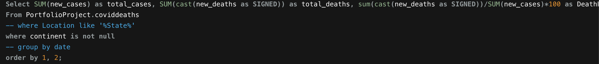

Tabelau Project
In this project and in the Tableau Covid we are going to be looking at Datasets provided by the official statistics on covid and using it to go into sql and crate queries/tables. Since there's a lot of different queiries im only going to show a few screen grabs
Dataset
This is just a small screengrab from the dataset in excel. The complete dataset is over 35 columns and 5000 rows but as I stated in the
Introduction since im using a lower level free software it won't allow for data exploration like say a Microsoft SQL Server. In this small
screen grab we can see certain columns used for filtering in our query such as Location, Total Cases, New Cases, the Date, etc...
Code
Right here where getting Location, Population, HighestInfectionCount, & ContractPercent by dividing the total cases by population and
multiplying by 100 to get it as a percentage. We wanted to get the countries in the location column, the total population of the country,
and the highest number of confirmed infections, we can then get the infection percentage for each country that the software will allow.
We then want to order by Contract Percentage and organize them in descending order.
This is the outcome of the above code. We are filtering between countries, population, infection count, and contract percentage. From here
we see Bosnia and Herzegovina has the highest contract percentage at 6.03% with an infection count of 197,866 out of their total population
3,280,815 people. Colombia is second in contract percentage with over 47 million more people in their population. So if we look closely at our
data we can derive that Colombia was the most hard country as a whole but based on the selected data we got from the set but on a per person basis Bosnia and Herzegovina
was hurt the most.

In this code we're grabbing the total cases, the total deaths, and the death percentage. We are getting the death percentage by dividing the total cases by the
total deaths and multiplying by a 100. We are deciding to filter by continent instead of location because later in the queries we want to filter and not show
too many rows where its difficult to read or understand. We then want to order by columns 1 and 2, being total_cases and total_deaths respectively, to order the table how
we would like.
Here we can see the output of the code above, we see the total number of confirmed cases from the selection of the dataset is 36,650,682 people. Again with the software
we are currently using there's a large portion of data that isn't being accounted for but still this is showing the correct process to go in on the data and get our findings.
The total deaths comes out to 793,836 and that with a death percentage of 2.17%.
Github Code Link
You can find the full code on Github: Covid Sql